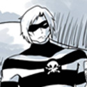
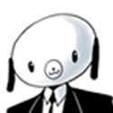
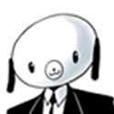
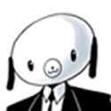

Alors que se déroulait un combat de catch historique en octobre 1986, 43 enfants dotés de pouvoirs surprenants voient le jour un peu partout à travers le monde. Sir Reginald Hargreeves, un inventeur richissime, recherche et adopte sept de ces enfants dans le but de sauver le monde. Les enfants grandissent et accumulent les exploits au sein de l'Umbrella Academy. Pourtant le groupe finit par être dissous. Plusieurs années plus tard, les membres se retrouvent pour l'enterrement de leur père adoptif. Au même moment survient une menace pour la planète.
Les Personnages
Sir Reginald Hargreeves
Père adoptif des sept enfants, il est en réalité un extraterrestre. C'est un scientifique de renom. La série lui attribue l'invention du télé-ascenseur, du parapluie-téléphone-portable et des céréales « Cortex Crack ». Il fut aussi Prix Nobel grâce à ses recherches qui ont permis d'accroître la capacité cérébrale du chimpanzé, et médaillé d'or olympique d'escrime.
Les enfants Il est à noter que chacun des sept enfants est désigné le plus souvent par un matricule plutôt que par son nom. En plus de ce matricule, chacun possède un surnom.
00.01 Spaceboy (Luther Hargreeves)
C'est le chef de l'Umbrella Academy. Il est doté d'une force et d'une résistance hors du commun. Après la dissolution du groupe, il est parti vivre sur la Lune. Lors d'une expédition sur Mars qui a mal tourné, il fut gravement blessé et son corps fut remplacé par celui d'un gorille.

00.02 Kraken (Diego Hargreeves)
Il est capable de retenir sa respiration indéfiniment et présente de bonnes aptitudes au combat rapproché et pour le maniement du couteau. Il est très insolent, ne respecte pas les règles et a un penchant pour la bagarre.
00.03 Rumeur (Allison Hargreeves)
Elle a la capacité de faire se réaliser des événements rien qu'en les énonçant et à la simple condition qu'elle commence sa phrase par J'ai entendu dire que .... . Elle a été mariée et a une fille, Claire, mais éprouve un certain amour pour son frère Spaceboy. Elle est décrite comme narcissique, ce qu'elle avoue d'ailleurs clairement dans le volume deux Dallas. Rumeur a eu les cordes vocales sectionnés par Vanya, ce qui rendit son pouvoir inutilisable et la rendit muette, cependant dans le deuxième tome, les agents du Tempus Aeternalis feront réparer ses cordes vocales. Elle est la responsable du meurtre du président Kennedy.
00.04 Seance (Klaus Hargreeves)
Il est télékinésiste, peut léviter et communiquer avec les morts. Toutefois, ses pouvoirs ne fonctionnent que s'il est pieds nus. Il a le teint très pâle et dans ses mains sont tatoués les mots Hello et Goodbye. Plus jeune il a consommé beaucoup de drogues en tout genre, ce qui lui a valu plusieurs séjours en désintoxication.
00.05 N°5
Il a le pouvoir de voyager dans le temps. À l'âge de 13 ans, il fait une fugue et explore l'avenir. Il est cependant contraint d'y rester de longues années, forcé de prouver que les voyages temporels vers le passé sont possibles. Une fois cette tâche accomplie, il retourne dans son époque. Il a l'apparence d'un enfant de 13 ans mais est âgé en réalité de 60 ans. Il est en effet resté 50 années dans le futur. Dans le tome 2, Dallas, on apprend que N°5 fut employé par une agence d'assassins chargés d'éliminer toute anomalie dans le continuum espace-temps et que Spaceboy et N°5 sont jumeaux.
00.06 Horreur (Ben Hargreeves)
Il a l'apparence d'un enfant mais possède des tentacules semblables à ceux d'une pieuvre sur son ventre. Il est mort avant le début de la série (une statue de lui est d'ailleurs érigée près du manoir de Sir Hargreeves) et n'apparait que très peu dans l'histoire.
00.07 la Viole Blanche (Vanya Hargreeves)
Elle ne présente pas de réel pouvoir mais s'intéresse énormément à la musique. Elle joue du violon à la perfection. Elle deviendra, à la suite d'une opération, une arme de destruction inimaginable.
Autres personnages
Pogo
Un chimpanzé capable de parler et doté d'une grande intelligence.
Abhijat
Le garde du corps personnel de Sir Hargreeves.
Madame Hargreeves
Un robot conçu pour que les enfants aient une maman.

Hazel et Cha-Cha
Ils apparaissent dans le tome 2. Ce sont deux tueurs psychopathes qui adorent les sucreries.
La série
Une série intitulée Umbrella Academy reprenant l'univers du Comic Book et développée par Steve Blackman a été commandée par Netflix, arrivant sur la plateforme le 15 février 2019.
Le casting
Tom Hopper est Luther
Luther est doté d’une incroyable super-force. Il a les bras et le torse d’un gorille ce qui le rend d’autant plus fort, mais qui peut être très handicapant dans la vie de tous les jours !
David Castañeda est Diego
As du combat, Diego manie les couteaux comme personne. Ses réflexes et ses techniques de défense sur-développés font de lui un adversaire redoutable qu’il ne vaut mieux ne pas énerver.
Emmy Raver-Lampman est Allison
Allison mène une carrière d’actrice et a une vie tumultueuse. Elle a le pouvoir de faire des prédictions et d’influencer les personnes afin qu’ils fassent ce qu’elle souhaite en commençant ses phrases par “J’ai entendu une rumeur”.
Robert Sheehan est Klaus
Très extravagant, Klaus est capable de parler avec les morts, notamment avec Numéro 6, un membre décédé de l’Umbrella Academy. Addict aux drogues en tous genres, le medium est rarement sobre, au grand désespoir de ses frères et sœurs.
Aidan Gallagher est Numéro Cinq
Adulte dans le corps d’un enfant, Numéro Cinq a le pouvoir de voyager dans le temps. Il peut aussi se déplacer d’un endroit à un autre. C’est lui qui prévient ses frères et sœurs de l’arrivée imminente de la fin du monde.
Ellen Page est Vanya
Vanya est une jeune femme timide, passionnée par le violon. Elle est la seule de l’Umbrella Academy à ne pas avoir de pouvoirs, et se sent exclue à cause de cette particularité.

 
